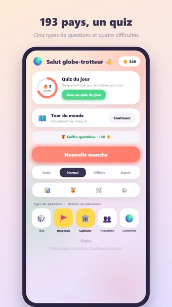
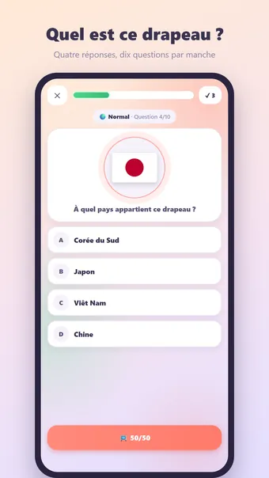
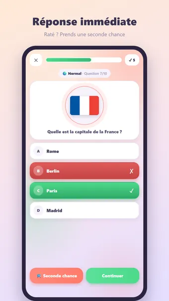
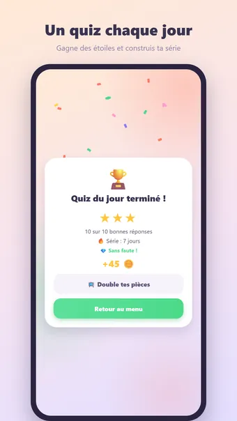

À propos de Quiz des Pays
Joue à Quiz des Pays et teste tes connaissances du monde entier — hors ligne, à tout moment et partout. 193 pays (tous les États membres de l'ONU), cinq types de questions et dix questions par manche.
Cinq types de questions
- À quel pays appartient ce drapeau ?
- Quelle est la capitale de ce pays ?
- De quel pays est-ce la capitale ?
- Quel pays a le plus d'habitants ?
- Sur quel continent se trouve ce pays ?
Les pastilles du menu te laissent choisir exactement ce que tu veux réviser : drapeaux, capitales, population, continents — ou tout mélangé.
Quatre niveaux de difficulté
- Facile : uniquement les pays connus dans le monde entier
- Normal : un pas de plus dans le monde
- Difficile : aussi les pays moins connus
- Expert : tout, avec des leurres de la même région — des pays voisins qui te piègent vraiment
Plus le niveau est élevé, plus chaque bonne réponse rapporte de pièces.
Quiz du jour
Dix questions par jour, les mêmes pour tout le monde. Gagne une médaille de 1 à 3 étoiles et construis ta série : 3, 7, 30 ou même 100 jours d'affilée !
Tour du monde
Voyage à travers des mondes de dix niveaux : d'abord l'Europe, l'Asie, l'Afrique, l'Amérique du Nord, l'Amérique du Sud et l'Océanie, puis des mondes mixtes couvrant la planète. Dans chaque monde la difficulté monte de Facile à Expert, avec un coffre au trésor au niveau 10 et des pièces bonus aux jalons des niveaux 10, 25, 50 et 100.
Un coup de main en cas de doute
Utilise le 50/50 pour éliminer deux mauvaises réponses — cela coûte des pièces ou une courte publicité. Raté quand même ? Prends une seconde chance et retente la même question.
Pièces et thèmes
Gagne des pièces à chaque bonne réponse, plus un bonus pour une manche sans faute. Dépense-les dans la boutique parmi douze thèmes : Pastel, Sombre, Clair, Forêt, Espace, Néon, Bois, Marbre et les thèmes saisonniers Printemps, Été, Noël et Halloween — ainsi que des styles de confettis pour ta victoire. Cosmétique uniquement — pas de pay-to-win.
Et aussi
- 27 succès, de ta première manche à une série de cent jours
- Des statistiques avec ta précision par type de question et par difficulté
- Noms de pays et capitales en français, anglais, néerlandais, espagnol, allemand et portugais
- Son et vibrations, désactivables dans les réglages
- Rappel facultatif pour le quiz du jour
- Entièrement hors ligne : aucun internet pour jouer, aucun compte
Gratuit. L’application affiche des publicités, que vous pouvez supprimer avec un achat facultatif ; aucun compte n’est nécessaire.
Questions fréquentes
Quiz des Pays est-il gratuit ?
Oui. Quiz des Pays se télécharge et se joue gratuitement. L’application affiche des publicités, que vous pouvez supprimer avec un achat intégré facultatif.
Quiz des Pays fonctionne-t-il hors ligne ?
Oui. Quiz des Pays fonctionne sans connexion internet : vous pouvez jouer dans l’avion, dans le train ou partout sans Wi-Fi.
Faut-il un compte pour jouer à Quiz des Pays ?
Non. Aucune inscription ni connexion : ouvrez l’application et jouez. Vos parties et vos réglages restent sur votre appareil.
Comment jouer à Quiz des Pays ?
Joue à Quiz des Pays et teste tes connaissances du monde entier — hors ligne, à tout moment et partout. 193 pays (tous les États membres de l'ONU), cinq types de questions et dix questions par manche.
Y a-t-il un nouveau défi chaque jour ?
Dix questions par jour, les mêmes pour tout le monde. Gagne une médaille de 1 à 3 étoiles et construis ta série : 3, 7, 30 ou même 100 jours d'affilée !
Quand Quiz des Pays sera-t-il disponible ?
Quiz des Pays arrive bientôt sur Google Play pour les téléphones et tablettes Android. Le bouton de téléchargement apparaîtra sur cette page dès sa sortie.
D’autres jeux qui pourraient vous plaire
Mots croisés
Les mots croisés classiques. Des grilles à l'infini, un défi chaque jour.
Google PlayMots Mêlés
Le classique des mots mêlés. Puzzles infinis et un défi quotidien inédit.
Google Play30 Seconds
Décrivez 5 mots en 30 secondes ! Un jeu de mots amusant à faire deviner.
Google PlayMentions légales
Vous trouverez ci-dessous les documents juridiques qui s’appliquent à Quiz des Pays.
Contact
Une question, un avis ou une demande liée à la vie privée ? Écrivez à joostmuijsenberg.dev@gmail.com.